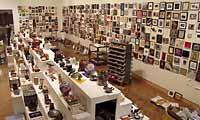

|
to previous page Both chance and modulation have served as important patterns for organization in contemporary art
during the 20th century. In the case of the 'Foot', chance position and grid arrangement are powerful
equalizers, but democracy also demands respect for the individual. Without the individual artist the
community disappears and the culture suffers. The Foot in the Door Show honors the individual artist
and, even more precisely, the individual's decision to self-identify as artist.
Both chance and modulation have served as important patterns for organization in contemporary art
during the 20th century. In the case of the 'Foot', chance position and grid arrangement are powerful
equalizers, but democracy also demands respect for the individual. Without the individual artist the
community disappears and the culture suffers. The Foot in the Door Show honors the individual artist
and, even more precisely, the individual's decision to self-identify as artist.
The exhibition features a vast array of artists: those with national and international reputations,
those just starting out, the very young, and the very old, artists from towns and cities all across
Minnesota. Some notable works include a painting of Lake Superior by George Morrison; a cast iron
animal cracker by Michael Rathbun;

a miniature airbrush painting of a shoe by 100 year old Melanie
Busch; installations by Kinji Akagawa and Carole Fisher; a mixed-media sculpture by Steven
Woodward; a miniature portrait of a chicken by Doug Argue; a wind-up mechanical tin man by Ann
Wood and Dean Lucker; a beaded stone by Chris Allen-Wickler; a portrait of a woman drawn on a
paper plate by Phillip Parhamovich during their first meeting in a restaurant (she later
became his wife); and a biographical sculpture by 10-year-old Samantha Sencer-Mura.